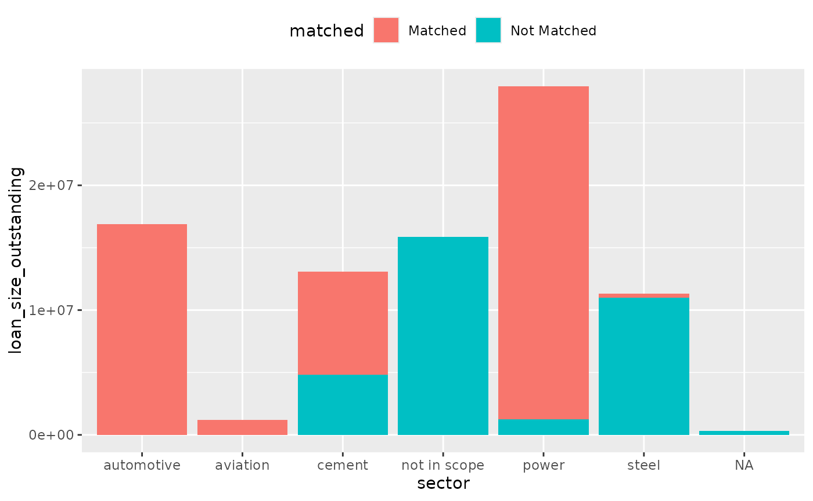
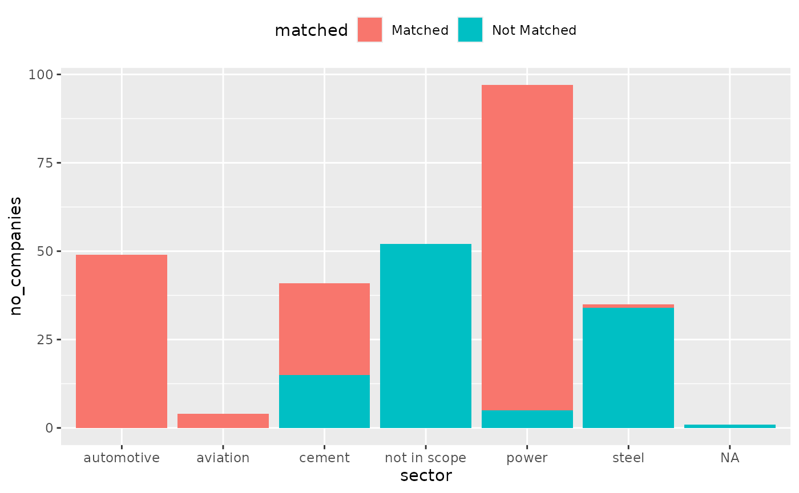
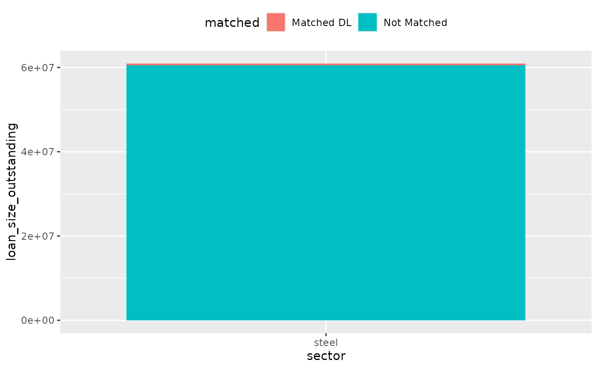
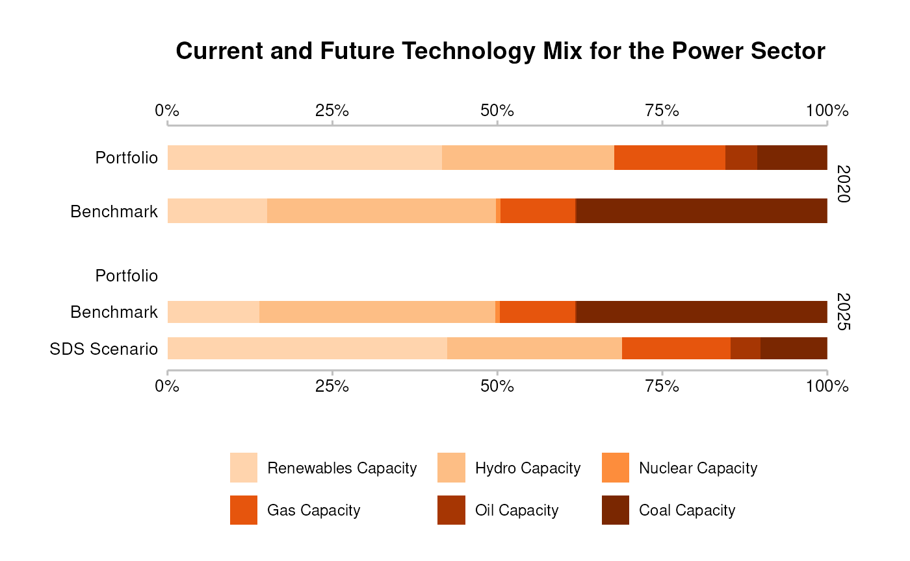

Running the Analysis
Source:vignettes/cookbook_running_the_analysis.Rmd
cookbook_running_the_analysis.RmdRunning the Analysis
This section outlines the key steps for running the PACTA for Banks analysis, beginning with a high-level overview followed by a detailed breakdown of each step. Code snippets are provided to ensure a straightforward implementation in your own R environment.
Structure of the Workflow
If you have prepared or obtained all required input datasets as outlined in Preparatory Steps, you can then proceed with the PACTA for Banks analysis through the following main steps:
- Setup: Load the necessary packages and import the data.
- Matching process: Match counterparties in the loan book to companies in the asset-based company data.
- Calculate PACTA metrics: Run the analysis to assess loan book alignment with transition scenario benchmarks.
- Plot PACTA metrics: Generate standard PACTA visualizations to support result interpretation.
Fig. 1: Structure of the Workflow
These steps are generally sequential, but achieving the best possible match rate often requires multiple iterations. The matching process may need to be refined and repeated to improve accuracy. The following sections provide a detailed breakdown of each step.
Setup
We use the pacta.loanbook package for key functions and example datasets. Additionally, we leverage dplyr, readxl, and readr for optional but convenient data manipulation and import functions.
Import Data
We need two datasets to begin: a loanbook and an asset-based company dataset (abcd). For more detail about the necessary structure of these datasets, see the data dictionaries for loanbook and abcd.
To simulate having these data files prepared, we will use the demo data included in the pacta.loanbook package to create example XLS files using the writexl package.
library(writexl)
writexl::write_xlsx(
x = loanbook_demo,
path = file.path(tempdir(), "loanbook.xlsx")
)
writexl::write_xlsx(
x = abcd_demo,
path = file.path(tempdir(), "abcd.xlsx")
)Typically, these data files are stored in XLS files on your computer. As an example, they could be imported as in the code below using the readxl package, however, if you use custom data that does not strictly follow the format as defined in the previous section, you may need to adjust the import code and/or do some data manipulation in R after importing.
loanbook <- readxl::read_excel(path = file.path(tempdir(), "loanbook.xlsx"))
loanbook
#> # A tibble: 283 × 13
#> id_loan id_direct_loantaker name_direct_loantaker id_ultimate_parent name_ultimate_parent loan_size_outstanding loan_size_outstanding_currency loan_size_credit_limit loan_size_credit_limit_currency sector_classification_system sector_classification_direct_loantaker lei_direct_loantaker isin_direct_loantaker
#> <chr> <chr> <chr> <chr> <chr> <dbl> <chr> <dbl> <chr> <chr> <chr> <chr> <lgl>
#> 1 L1 C294 Vitale Group UP15 Scholz KGaA 225625 EUR 18968805 EUR NACE D35.11 NA NA
#> 2 L2 C293 Moen-Moen UP84 NA 301721 EUR 19727961 EUR NACE D35.11 NA NA
#> 3 L3 C292 Rowe-Rowe UP288 Harvey, Harvey and Harvey 410297 EUR 20811147 EUR NACE D35.11 801600ATB1D513IUFZ77 NA
#> 4 L4 C299 Fadel-Fadel UP54 NA 233049 EUR 19042869 EUR NACE D35.11 NA NA
#> 5 L5 C305 Ring AG & Co. KGaA UP104 Conti, Conti e Conti SPA 406585 EUR 20774115 EUR NACE D35.11 NA NA
#> 6 L6 C304 Kassulke-Kassulke UP83 Farrell, Farrell and Farrell 185721 EUR 18570711 EUR NACE D35.11 108200TUBGG1DR0QR635 NA
#> 7 L7 C227 Morissette Group UP134 Weller AG 184793 EUR 18561453 EUR NACE D35.11 NA NA
#> 8 L8 C303 Barone s.r.l. UP163 Williamsonn PLC 291513 EUR 19626123 EUR NACE D35.11 NA NA
#> 9 L9 C301 Werner Werner AG & Co. KGaA UP138 Leone-Leone s.r.l. 407513 EUR 20783373 EUR NACE D35.11 NA NA
#> 10 L10 C302 De rosa s.r.l. UP32 Benedetti, Benedetti e Benedetti Group 186649 EUR 18579969 EUR NACE D35.11 NA NA
#> # ℹ 273 more rows
abcd <- readxl::read_excel(path = file.path(tempdir(), "abcd.xlsx"))
abcd
#> # A tibble: 4,972 × 12
#> company_id name_company lei sector technology production_unit year production emission_factor plant_location is_ultimate_owner emission_factor_unit
#> <chr> <chr> <chr> <chr> <chr> <chr> <dbl> <dbl> <dbl> <chr> <lgl> <chr>
#> 1 175 Giordano, Giordano e Giordano e figli 18500033XH6RG332SX89 power hydrocap MW 2020 121032. NA MY TRUE tonnes of CO2 per per hour per MW
#> 2 175 Giordano, Giordano e Giordano e figli 18500033XH6RG332SX89 power hydrocap MW 2021 119274. NA MY TRUE tonnes of CO2 per per hour per MW
#> 3 175 Giordano, Giordano e Giordano e figli 18500033XH6RG332SX89 power hydrocap MW 2022 117515. NA MY TRUE tonnes of CO2 per per hour per MW
#> 4 175 Giordano, Giordano e Giordano e figli 18500033XH6RG332SX89 power hydrocap MW 2023 115757. NA MY TRUE tonnes of CO2 per per hour per MW
#> 5 175 Giordano, Giordano e Giordano e figli 18500033XH6RG332SX89 power hydrocap MW 2024 113999. NA MY TRUE tonnes of CO2 per per hour per MW
#> 6 175 Giordano, Giordano e Giordano e figli 18500033XH6RG332SX89 power hydrocap MW 2025 112240. NA MY TRUE tonnes of CO2 per per hour per MW
#> 7 526 Vitali, Vitali e Vitali s.r.l. 887100CAVZ6Y3KYT3Q90 cement integrated facility tonnes per year 2020 6327858. 0.723 CI TRUE tonnes of CO2 per tonne of cement
#> 8 526 Vitali, Vitali e Vitali s.r.l. 887100CAVZ6Y3KYT3Q90 cement integrated facility tonnes per year 2021 6569983. 0.735 CI TRUE tonnes of CO2 per tonne of cement
#> 9 526 Vitali, Vitali e Vitali s.r.l. 887100CAVZ6Y3KYT3Q90 cement integrated facility tonnes per year 2022 6812108. 0.746 CI TRUE tonnes of CO2 per tonne of cement
#> 10 526 Vitali, Vitali e Vitali s.r.l. 887100CAVZ6Y3KYT3Q90 cement integrated facility tonnes per year 2023 7054232. 0.758 CI TRUE tonnes of CO2 per tonne of cement
#> # ℹ 4,962 more rowsMatching Process
The next step after loading all required input files is to run the matching process, where you will match loans from the loanbook data with production data from the ABCD dataset
The matching process is divided into three main steps:
- Apply Matching Algorithm – Calculate match precision scores between the loan book and ABCD datasets.
- Validate Matches – Manually review matches, selecting the correct company when multiple exceed the threshold score.
- Prioritize Matches – Rank validated matches by priority level.
The following sections provide a detailed breakdown of each step.
Score the match precision between the loanbook and abcd datasets
match_name() scores the match between names in a
loanbook dataset and names in an asset-based company dataset. The names
come from the columns name_direct_loantaker and
name_ultimate_parent of the loanbook dataset, and from the
column name_company of the asset-based company dataset. In
the loan book data set, it is possible to optionally add any number of
name_intermediate_parent_* columns, where *
indicates the level up the corporate tree from
direct_loantaker.
The raw names are internally transformed applying best-practices commonly used in name matching algorithms, such as:
- Remove special characters
- Replace language specific characters
- Abbreviate certain names to reduce their importance in the matching
- Remove corporate suffixes when necessary
- Spell out numbers to increase their importance
The similarity is then scored between the internally-transformed
names of the loanbook against the names in the abcd. For more
information on the scoring algorithm used, see
stringdist::stringsim().
The basic usage of match_name() is as follows:
matched <- match_name(loanbook, abcd)
matched
#> # A tibble: 326 × 22
#> id_loan id_direct_loantaker name_direct_loantaker id_ultimate_parent name_ultimate_parent loan_size_outstanding loan_size_outstanding_currency loan_size_credit_limit loan_size_credit_limit_currency sector_classification_system sector_classification_direct_loantaker lei_direct_loantaker isin_direct_loantaker id_2dii level sector sector_abcd name name_abcd score source borderline
#> <chr> <chr> <chr> <chr> <chr> <dbl> <chr> <dbl> <chr> <chr> <chr> <chr> <lgl> <chr> <chr> <chr> <chr> <chr> <chr> <dbl> <chr> <lgl>
#> 1 L1 C294 Vitale Group UP15 Scholz KGaA 225625 EUR 18968805 EUR NACE D35.11 NA NA UP190 ultima… power power Scho… Scholz K… 1 loanb… FALSE
#> 2 L3 C292 Rowe-Rowe UP288 Harvey, Harvey and Harvey 410297 EUR 20811147 EUR NACE D35.11 801600ATB1D513IUFZ77 NA UP101 ultima… power power Harv… Harvey, … 1 loanb… FALSE
#> 3 L5 C305 Ring AG & Co. KGaA UP104 Conti, Conti e Conti SPA 406585 EUR 20774115 EUR NACE D35.11 NA NA UP39 ultima… power power Cont… Conti, C… 1 loanb… FALSE
#> 4 L6 C304 Kassulke-Kassulke UP83 Farrell, Farrell and Farrell 185721 EUR 18570711 EUR NACE D35.11 108200TUBGG1DR0QR635 NA DL129 direct… power power Kass… Kassulke… 1 loanb… FALSE
#> 5 L6 C304 Kassulke-Kassulke UP83 Farrell, Farrell and Farrell 185721 EUR 18570711 EUR NACE D35.11 108200TUBGG1DR0QR635 NA UP63 ultima… power power Farr… Farrell,… 1 loanb… FALSE
#> 6 L7 C227 Morissette Group UP134 Weller AG 184793 EUR 18561453 EUR NACE D35.11 NA NA DL179 direct… power power Mori… Moretti … 0.911 loanb… FALSE
#> 7 L7 C227 Morissette Group UP134 Weller AG 184793 EUR 18561453 EUR NACE D35.11 NA NA UP224 ultima… power power Well… Weller AG 1 loanb… FALSE
#> 8 L8 C303 Barone s.r.l. UP163 Williamsonn PLC 291513 EUR 19626123 EUR NACE D35.11 NA NA UP228 ultima… power power Will… Williams… 0.987 loanb… FALSE
#> 9 L9 C301 Werner Werner AG & Co. KGaA UP138 Leone-Leone s.r.l. 407513 EUR 20783373 EUR NACE D35.11 NA NA DL274 direct… power power Wern… Wende We… 0.844 loanb… FALSE
#> 10 L9 C301 Werner Werner AG & Co. KGaA UP138 Leone-Leone s.r.l. 407513 EUR 20783373 EUR NACE D35.11 NA NA UP132 ultima… power power Leon… Leone-Le… 1 loanb… FALSE
#> # ℹ 316 more rowsmatch_name() defaults to scoring matches between name
strings that belong to the same sector. This implies that a potential
match will only be shown if the names in the loanbook and the ABCD are
sufficiently similar AND the loan is classified in the same sector as
the company activity in the ABCD Using by_sector = FALSE
removes this limitation – increasing computation time, and the number of
potentially incorrect matches to manually validate. In most cases, it is
recommended to keep by_sector = TRUE. However, lifting the
restriction can be helpful in cases where the sector classification in
the loanbook is not reliable or no sector classification is available at
all. Below you can see that the removal of the restriction increases the
number of potential matches.
The match_name() function, by default, scores matches
between name strings within the same sector. This means a potential
match is shown only if: - The names in the loan book and ABCD dataset
are sufficiently similar. - The loan is classified in the same sector as
the company activity in the ABCD dataset.
Setting by_sector = FALSE removes this restriction, which: - Increases computation time. - Increases the number of potential (but possibly incorrect) matches requiring manual validation.
In most cases, keeping by_sector = TRUE is recommended. However, disabling the sector restriction can be useful when sector classifications in the loan book are unreliable or missing. Below, you can see how removing the restriction increases the number of potential matches.
match_name(loanbook, abcd, by_sector = FALSE) %>% nrow()
#> [1] 656
# Compare to
match_name(loanbook, abcd, by_sector = TRUE) %>% nrow()
#> [1] 326The min_score argument sets a minimum threshold score
for matching precision. This helps by: - Filtering out imprecise matches
by setting a higher threshold. - Adding more potential matches if the
default suggestions don’t provide enough coverage.
The default value is 0.8, but you can adjust it between 0 and 1. A higher score means stricter matching, resulting in fewer potential matches.
The example below sets the threshold to 0.9:
match_name(loanbook, abcd, min_score = 0.9) %>%
pull(score) %>%
range()
#> [1] 0.9007692 1.0000000Manually validate matches
After calculating initial match scores, you must manually review the suggested matches to decide which to keep or remove. This step is critical for ensuring a high quality match result, especially in text-based matching, where similar company names may not actually refer to the same entity.
Manual validation helps to: - Prevent incorrect matches from affecting the analysis. - Ensure accuracy in linking loan book data to the ABCD dataset. - Improve overall match precision, especially when iterating to enhance coverage.
Since this step isn’t automated, it requires effort, often making it the most time-consuming part of the process.
To begin, save the output of match_name() to a CSV file for review. For example, using {readr}:
After exporting the match results, you must manually review, edit,
and save the data: - Open the file – Load
matched.csv in a spreadsheet editor (Excel, Google Sheets,
etc.). - Compare matches – Verify if the
name (loan book) and name_abcd (ABCD)
correspond to the same entity. Use additional details (sector, company
structure, internal data) to improve accuracy. - Edit the
data: - If the match is valid, set the score value
to 1. - If the match is incorrect or uncertain, leave the
score as-is or set it to a value other than 1.
- Save the edited file: as
valid_matches.csv.
Once validated, re-import the edited file into R, for example, using readr:
valid_matches <- readr::read_csv(file = file.path(tempdir(), "valid_matches.csv"), show_col_types = FALSE)You can find more detailed information about the matching process under the header “PACTA for Banks Training Webinar 2” in the training materials section of the PACTA for Banks website and in the corresponding slide deck.
Prioritize validated matches by level
The validated dataset may have multiple matches per loan. Consider
the case where a loan is given to “Acme Power USA”, a subsidiary of
“Acme Power Co.”. There may be both “Acme Power USA” and “Acme Power
Co.” in the abcd, and so there could be two valid matches
for this loan. To get the best match only, use prioritize()
– it picks rows where score is 1 and level per
loan is of highest priority:
some_interesting_columns <- c("id_2dii", "level", "score")
prioritized_matches <-
valid_matches %>%
prioritize()
prioritized_matches %>% select(all_of(some_interesting_columns))
#> # A tibble: 177 × 3
#> id_2dii level score
#> <chr> <chr> <dbl>
#> 1 DL129 direct_loantaker 1
#> 2 DL144 direct_loantaker 1
#> 3 DL270 direct_loantaker 1
#> 4 DL86 direct_loantaker 1
#> 5 DL5 direct_loantaker 1
#> 6 DL80 direct_loantaker 1
#> 7 DL150 direct_loantaker 1
#> 8 DL3 direct_loantaker 1
#> 9 DL65 direct_loantaker 1
#> 10 DL79 direct_loantaker 1
#> # ℹ 167 more rowsBy default, highest priority refers to the most granular match
(direct_loantaker). The default priority is set internally
via prioritize_level().
prioritize_level(valid_matches)
#> [1] "direct_loantaker" "ultimate_parent"You may use a different priority. One way to do that is to pass a
function to priority. For example, use rev()
to reverse the default priority.
valid_matches %>%
prioritize(priority = rev) %>%
select(all_of(some_interesting_columns))
#> # A tibble: 177 × 3
#> id_2dii level score
#> <chr> <chr> <dbl>
#> 1 UP190 ultimate_parent 1
#> 2 UP101 ultimate_parent 1
#> 3 UP39 ultimate_parent 1
#> 4 UP63 ultimate_parent 1
#> 5 UP224 ultimate_parent 1
#> 6 UP132 ultimate_parent 1
#> 7 UP12 ultimate_parent 1
#> 8 UP20 ultimate_parent 1
#> 9 UP134 ultimate_parent 1
#> 10 UP127 ultimate_parent 1
#> # ℹ 167 more rowsA Note on Sector Classifications and the borderline
Flag
A note on sector classification
Matches are preferred when the sector from the loanbook
matches the sector from the abcd. The loanbook
sector is determined internally by mapping the sector classification
code from the loan book to a PACTA sector, using the
sector_classification_system and
sector_classification_direct_loantaker columns. Currently,
the following options are supported for
sector_classification_system, specified in
sector_classifications:
GICS, ISIC, NACE, NAICS, PSIC, SIC
The borderline flag
An issue arises when, for example, a company is classified in the
“power transmission” sector. In a perfect world, these companies would
produce no electricity, and we would not try to match them. In practice,
however, we find there is often overlap, as companies may have
integrated business models that span multiple steps of the supply chain
or sector classification systems do not break down every code clearly
enough to map it to PACTA sectors unambiguously. For this reason, we
introduced the borderline flag.
In the example below, we see two classification codes coming from the NACE classification standard:
nace_classification %>%
filter(code %in% c("D35.11", "D35.14", "D35.1"))
#> # A tibble: 3 × 6
#> original_code description code sector borderline version
#> <chr> <chr> <chr> <chr> <lgl> <chr>
#> 1 35.1 35.1 Electric power generation,… D35.1 power TRUE 2.1
#> 2 35.11 35.11 Production of electricity… D35.… power FALSE 2.1
#> 3 35.14 35.14 Distribution of electrici… D35.… power TRUE 2.1Notice that the code D35.11 corresponds to power generation. This is
an identical match to power sector in PACTA, and thus the
borderline flag is set to FALSE. In contrast,
code D35.14 corresponds to the distribution of electricity. In a perfect
world, we would set this code to not in scope, however
there is still a chance that these companies produce electricity. For
this reason, we have mapped it to power with
borderline = TRUE. Finally, code D35.1 corresponds to the
wider electricity sector, covering “Electric power generation,
transmission and distribution”. This is a case where the granularity is
insufficient to unambiguously match the code to the power
sector as defined in PACTA, and thus the borderline flag is
set to TRUE.
In practice, if a company has a sector code with
borderline is TRUE and is matched,
then consider the company in scope. If it has a borderline
value TRUE and is not matched, then consider it
out of scope.
Optional: Prepare own sector classification mapper
If you can obtain sector codes in any one of those classification systems for your loan book, it is strongly recommended using them. If you do not have your loans mapped to any of these systems, you can either run the matching without a sector classification (see above), or you can use a custom sector classification system.
If you want to use your own custom sector classification system, you
will need to create a file that follows the same structure as the sector
classification files in sector_classifications, that is,
the file needs to contain the following columns (of the following
types):
-
sector: <character> -
borderline: <logical> -
code: <character> -
code_system: <character>
Please notice that when manually preparing a custom sector
classification file, you need to decide for every code of your mapping
system which PACTA sector the code maps to. This requires the system to
be relatively granular to capture the nuances of the supply chains of
the companies in your loan book. As discussed above, any sector code
that is not unambiguously in scope or out of scope for a given PACTA
sector should be marked TRUE in the borderline
column. Any sector code that is clearly not in scope should be marked
FALSE and receive the sector value
not in scope. Any sector code that is clearly in scope
should be marked FALSE for borderline and
receive the PACTA sector value that it maps to in the
sector column.
ADD EXAMPLE
Calculate the Match Success Rate
pacta.loanbook allows you to match loans from your loanbook to the companies in an asset-based company dataset. However, not all loans will have a match – some companies may be missing from the ABCD dataset, or they may operate outisde the PACTA focus sectors (power, cement, oil and gas, aviation, coal, automotive, steel, and hdv).
To assess how much of your loan book is successfully matched, you can circulate matching coverage in two ways:
By dollar value: Measure the portion of your loan book covered, using one of the
loan_size_*columns.By company count: Count the number of companies matched.
To visualize matching coverage, first load the ggplot2 package:
We will use the example datasets created in the previous section. To
illustrate the point, we create a loanbook dataset with two
mismatched loans:
loanbook <- loanbook %>%
mutate(
name_ultimate_parent =
ifelse(id_loan == "L1", "unmatched company name", name_ultimate_parent),
sector_classification_direct_loantaker =
ifelse(id_loan == "L2", "99", sector_classification_direct_loantaker)
)We will then run the matching algorithm on this loanbook:
matched <- loanbook %>%
match_name(abcd) %>%
prioritize()
#> Warning: Some `sector_classification_direct_loantaker` are unknown:99
#> ℹ If you wish to request a new sector classification system, please create an issue here:
#> • https://github.com/RMI-PACTA/r2dii.data/issues
#> ℹ Or contact the PACTA team here:
#> • pacta4banks@rmi.orgThe matched dataset contains only successfully
matched loans. To determine coverage, we need to refer back to the
original loanbook dataset and classify each loan according to the PACTA
sectors using the sector_classification_direct_loantaker
column.
To achieve this, we merge loanbook with the
sector_classifications dataset, which includes all sector
classification standards used by PACTA. However, there are two technical
caveats to consider:
- Column name differences: The datasets use different column names for
sector classifications. We use
dplyr::left_join()with thebyargument to merge:
-
sector_classification_systemandsector_classification_direct_loantaker(fromloanbook) -
code_systemandcode(fromsector_classifications)
- Data type mismatch: The sector classification codes have different
data types in the two datasets. To prevent errors in
dplyr::left_join():
- We convert
sector_classification_direct_loantakerto match the type ofcodebefore merging. - After merging, we restore its original type.
merge_by <- c(
sector_classification_system = "code_system",
sector_classification_direct_loantaker = "code"
)
loanbook_with_sectors <- loanbook %>%
left_join(sector_classifications, by = merge_by) %>%
mutate(sector_classification_direct_loantaker = as.character(sector_classification_direct_loantaker))To generate the coverage dataset, we merge these two
datasets together:
coverage <- left_join(loanbook_with_sectors, matched) %>%
mutate(
loan_size_outstanding = as.numeric(loan_size_outstanding),
loan_size_credit_limit = as.numeric(loan_size_credit_limit),
matched = case_when(
score == 1 ~ "Matched",
is.na(score) ~ "Not Matched",
TRUE ~ "Not Matched"
),
sector = case_when(
borderline == TRUE & matched == "Not Matched" ~ "not in scope",
TRUE ~ sector
)
)
#> Joining with `by = join_by(id_loan, id_direct_loantaker, name_direct_loantaker,
#> id_ultimate_parent, name_ultimate_parent, loan_size_outstanding,
#> loan_size_outstanding_currency, loan_size_credit_limit,
#> loan_size_credit_limit_currency, sector_classification_system,
#> sector_classification_direct_loantaker, lei_direct_loantaker,
#> isin_direct_loantaker, sector, borderline)`1. Calculate loanbook coverage by dollar value
Using the coverage dataset, we can measure total loan
book coverage based on dollar value. To facilitate this, we define two
helper functions:
- A function to calculate coverage by dollar value.
- A plotting function to visualize coverage.
dollar_value <- function(data, ...) {
data %>%
summarize(loan_size_outstanding = sum(loan_size_outstanding), .by = c(matched, ...))
}
plot_coverage <- function(data, x, y) {
ggplot(data) +
geom_col(aes({{x}}, {{y}}, fill = matched)) +
# Use more horizontal space -- avoids overlap on x axis text
theme(legend.position = "top")
}Let’s first explore all loans.

To calculate the total, in-scope, loanbook coverage:
coverage %>%
filter(sector != "not in scope") %>%
dollar_value() %>%
plot_coverage(matched, loan_size_outstanding)
You may break-down the plot by sector:

Or even further, by matching level:
coverage %>%
mutate(matched = case_when(
matched == "Matched" & level == "direct_loantaker" ~ "Matched DL",
matched == "Matched" & level == "intermediate_parent_1" ~ "Matched IP1",
matched == "Matched" & level == "ultimate_parent" ~ "Matched UP",
matched == "Not Matched" ~ "Not Matched",
TRUE ~ "Catch unknown"
)) %>%
dollar_value(sector) %>%
plot_coverage(sector, loan_size_outstanding)
2. Count the number of companies matched
Another useful metric is the number of companies in your loan book
that were successfully matched. The most relevant level for this
analysis is likely the direct_loantaker level.
companies_matched <- coverage %>%
summarize(no_companies = n_distinct(name_direct_loantaker), .by = c(sector, matched))
companies_matched %>%
plot_coverage(sector, no_companies)
Optional: Handling misclassified loans
A misclassified loan occurs when a counterparty is incorrectly identified as belonging to a PACTA sector based on the sector classification in the loan book.
Why does misclassification matter? - It artificially lowers match success rates by expecting matches that don’t exist in the ABCD dataset. - Iterating the matching process won’t help—if a company doesn’t operate in an in-scope sector, no adjustments will create a valid match. - A reliable match success rate requires an accurate denominator, meaning only loans truly within an in-scope sector should be included.
Misclassification is typically identified manually by reviewing unmatched counterparties to determine if they should be in scope. Since this process can be time-consuming, it’s best to prioritize unmatched loans with the largest amounts, as they have the greatest impact on the match success rate.
Since misclassified loans cannot be matched, leaving them in the dataset skews results. While correction isn’t mandatory, adjusting large misclassified loans is strongly recommended for more accurate analysis.
Options for Handling Misclassified Loans
Once misclassified loans have been identified, there are two options:
- Correct the classification in the loanbook:
- Update the raw loanbook to reflect the correct sector.
- Re-run the matching process to ensure the loan is matched appropriately
- Keep documentation of changes for replicability
- Adjust match success rate calculation:
- If modifying the raw loanbook isn’t possible, exclude misclassified loans from the success rate calculation.
- Create a
loans_to_remove.csvfile containing a single column,id_loan, listing the misclassified loans. - Remove these loans from the match success calculation to avoid misleading results.
The first option is generally preferred, as it ensures loans are assigned to the correct sector.
Once the list of misclassified loans is identified, there are two broad options to appropriately these cases.
Example
Suppose a loan with ID L255 is falsely classified as a steel company but actually produces steel-based products, making it part of the downstream value chain rather than primary steel production. Since it cannot be matched to ABCD, but the sector classification cannot be changed, we handle it by creating a CSV file with its ID.
This correction process can be done programmatically or manually, ensuring more accurate match success rate reporting.
readr::write_csv(
x = tibble(id_loan = "L255"),
file = file.path(tempdir(), "loans_to_remove.csv")
)The loans_to_remove.csv file should have just one
column, id_loan, and therefore be structured as
follows:
-
id_loan: <character>
We then read in the file and remove the misclassified loan from the match success rate calculation. We compare the coverage before and after the removal of the misclassified loan to see the impact of the correction. For demonstration purposes, we artificially increase the loan_size_outstanding of the affected counterparty while focusing on the steel sector only, to see the clear impact.
coverage_compare <- coverage %>%
mutate(
loan_size_outstanding = ifelse(id_loan == "L255", 50000000, loan_size_outstanding)
) %>%
filter(sector == "steel")
coverage_compare %>%
mutate(matched = case_when(
matched == "Matched" & level == "direct_loantaker" ~ "Matched DL",
matched == "Matched" & level == "intermediate_parent_1" ~ "Matched IP1",
matched == "Matched" & level == "ultimate_parent" ~ "Matched UP",
matched == "Not Matched" ~ "Not Matched",
TRUE ~ "Catch unknown"
)) %>%
dollar_value(sector) %>%
plot_coverage(sector, loan_size_outstanding)
loans_to_remove <- readr::read_csv(file.path(tempdir(), "loans_to_remove.csv"))
coverage_corrected <- coverage_compare %>%
anti_join(loans_to_remove, by = "id_loan")
coverage_corrected %>%
mutate(matched = case_when(
matched == "Matched" & level == "direct_loantaker" ~ "Matched DL",
matched == "Matched" & level == "intermediate_parent_1" ~ "Matched IP1",
matched == "Matched" & level == "ultimate_parent" ~ "Matched UP",
matched == "Not Matched" ~ "Not Matched",
TRUE ~ "Catch unknown"
)) %>%
dollar_value(sector) %>%
plot_coverage(sector, loan_size_outstanding)Calculate PACTA alignment metrics
You can calculate scenario targets using two different approaches: Market Share Approach, or Sectoral Decarbonization Approach.
Market Share Approach
The Market
Share Approach is used to calculate scenario targets for the
production of a technology in a sector. For example, we can
use this approach to set targets for the production of electric vehicles
in the automotive sector. This approach is recommended for sectors where
a granular technology scenario roadmap exists.
Targets can be set at the portfolio level:
# Use these datasets to practice but eventually you should use your own data.
scenario <- scenario_demo_2020
regions <- region_isos_demo
market_share_targets_portfolio <-
target_market_share(
data = prioritized_matches,
abcd = abcd,
scenario = scenario,
region_isos = regions
)
market_share_targets_portfolio
#> # A tibble: 1,076 × 10
#> sector technology year region scenario_source metric production technology_share scope percentage_of_initial_production_by_scope
#> <chr> <chr> <dbl> <chr> <chr> <chr> <dbl> <dbl> <chr> <dbl>
#> 1 automotive electric 2020 global demo_2020 projected 145649. 0.165 sector 0
#> 2 automotive electric 2020 global demo_2020 target_cps 145649. 0.165 sector 0
#> 3 automotive electric 2020 global demo_2020 target_sds 145649. 0.165 sector 0
#> 4 automotive electric 2020 global demo_2020 target_sps 145649. 0.165 sector 0
#> 5 automotive electric 2021 global demo_2020 projected 147480. 0.165 sector 0.000739
#> 6 automotive electric 2021 global demo_2020 target_cps 146915. 0.165 sector 0.000511
#> 7 automotive electric 2021 global demo_2020 target_sds 153332. 0.167 sector 0.00310
#> 8 automotive electric 2021 global demo_2020 target_sps 147258. 0.165 sector 0.000649
#> 9 automotive electric 2022 global demo_2020 projected 149310. 0.165 sector 0.00148
#> 10 automotive electric 2022 global demo_2020 target_cps 148155. 0.164 sector 0.00101
#> # ℹ 1,066 more rowsOr at the company level:
market_share_targets_company <-
target_market_share(
data = prioritized_matches,
abcd = abcd,
scenario = scenario,
region_isos = regions,
by_company = TRUE, # Output results at company-level
weight_production = FALSE
)
market_share_targets_company
#> # A tibble: 14,505 × 11
#> sector technology year region scenario_source name_abcd metric production technology_share scope percentage_of_initial_production_by_scope
#> <chr> <chr> <dbl> <chr> <chr> <chr> <chr> <dbl> <dbl> <chr> <dbl>
#> 1 automotive electric 2020 global demo_2020 Bernardi, Bernardi e Bernardi SPA projected 324592. 0.0759 sector 0
#> 2 automotive electric 2020 global demo_2020 Bernardi, Bernardi e Bernardi SPA target_cps 324592. 0.0759 sector 0
#> 3 automotive electric 2020 global demo_2020 Bernardi, Bernardi e Bernardi SPA target_sds 324592. 0.0759 sector 0
#> 4 automotive electric 2020 global demo_2020 Bernardi, Bernardi e Bernardi SPA target_sps 324592. 0.0759 sector 0
#> 5 automotive electric 2020 global demo_2020 Christiansen PLC projected 512438. 0.130 sector 0
#> 6 automotive electric 2020 global demo_2020 Christiansen PLC target_cps 512438. 0.130 sector 0
#> 7 automotive electric 2020 global demo_2020 Christiansen PLC target_sds 512438. 0.130 sector 0
#> 8 automotive electric 2020 global demo_2020 Christiansen PLC target_sps 512438. 0.130 sector 0
#> 9 automotive electric 2020 global demo_2020 Donati, Donati e Donati s.r.l. projected 277214. 1 sector 0
#> 10 automotive electric 2020 global demo_2020 Donati, Donati e Donati s.r.l. target_cps 277214. 1 sector 0
#> # ℹ 14,495 more rowsThese results can be saved/written to a CSV file for potential input to other models and software, for example:
readr::write_csv(x = market_share_targets_portfolio, file = file.path(tempdir(), "market_share_targets_portfolio.csv"))
readr::write_csv(x = market_share_targets_company, file = file.path(tempdir(), "market_share_targets_company.csv"))Remember to replace tempdir() with the path to the
directory that you wish to save your files in.
Sectoral Decarbonization Approach
The Sectoral
Decarbonization Approach is used to calculate scenario targets for
the emission_factor of a sector. For example, you can use
this approach to set targets for the average emission factor of the
cement sector. This approach is recommended for sectors lacking
technology roadmaps.
# Use this dataset to practice but eventually you should use your own data.
co2 <- co2_intensity_scenario_demo
sda_targets <-
target_sda(
data = prioritized_matches,
abcd = abcd,
co2_intensity_scenario = co2,
region_isos = regions
) %>%
filter(sector == "cement", year >= 2020)
#> Warning: Removing rows in abcd where `emission_factor` is NA
sda_targets
#> # A tibble: 110 × 6
#> sector year region scenario_source emission_factor_metric emission_factor_value
#> <chr> <dbl> <chr> <chr> <chr> <dbl>
#> 1 cement 2020 advanced economies demo_2020 projected 0.0230
#> 2 cement 2020 developing asia demo_2020 projected 0.0595
#> 3 cement 2020 global demo_2020 projected 0.664
#> 4 cement 2021 advanced economies demo_2020 projected 0.0232
#> 5 cement 2021 developing asia demo_2020 projected 0.0594
#> 6 cement 2021 global demo_2020 projected 0.665
#> 7 cement 2022 advanced economies demo_2020 projected 0.0233
#> 8 cement 2022 developing asia demo_2020 projected 0.0592
#> 9 cement 2022 global demo_2020 projected 0.666
#> 10 cement 2023 advanced economies demo_2020 projected 0.0235
#> # ℹ 100 more rowsOr at the company level:
sda_targets_company <-
target_sda(
data = prioritized_matches,
abcd = abcd,
co2_intensity_scenario = co2,
region_isos = regions,
by_company = TRUE # Output results at company-level
)
#> Warning: Removing rows in abcd where `emission_factor` is NA
sda_targets_company
#> # A tibble: 966 × 7
#> sector year region scenario_source name_abcd emission_factor_metric emission_factor_value
#> <chr> <dbl> <chr> <chr> <chr> <chr> <dbl>
#> 1 cement 2020 advanced economies demo_2020 Milani, Milani e Milani SPA projected 0.714
#> 2 cement 2020 developing asia demo_2020 Heidrich GmbH projected 0.675
#> 3 cement 2020 developing asia demo_2020 Hovel Hovel GmbH & Co. KGaA projected 0.622
#> 4 cement 2020 global demo_2020 Battaglia-Battaglia Group projected 0.626
#> 5 cement 2020 global demo_2020 Bergstrom, Bergstrom and Bergstrom projected 0.607
#> 6 cement 2020 global demo_2020 Carsten GmbH & Co. KG projected 0.625
#> 7 cement 2020 global demo_2020 Crist-Crist projected 0.655
#> 8 cement 2020 global demo_2020 Durgan-Durgan projected 0.702
#> 9 cement 2020 global demo_2020 Eberhardt Eberhardt GmbH projected 0.685
#> 10 cement 2020 global demo_2020 Geissler Geissler AG & Co. KGaA projected 0.637
#> # ℹ 956 more rowsThese results can be saved/written to a CSV file for potential input to other models and software, for example:
readr::write_csv(x = sda_targets, file = file.path(tempdir(), "sda_targets.csv"))
readr::write_csv(x = sda_targets_company, file = file.path(tempdir(), "sda_targets_company.csv"))Remember to replace tempdir() with the path to the
directory that you wish to save your files in.
Visualize PACTA alignment metrics
There are a large variety of possible visualizations stemming from
the outputs of target_market_share() and
target_sda(). Below, we highlight a couple of common plots
that can easily be created using the pacta.loanbook
package.
Market Share: Sector-level technology mix
From the market share output, you can plot the portfolio’s exposure
to various climate sensitive technologies (projected), and
compare with the corporate economy, or against various scenario
targets.
# Pick the targets you want to plot.
data <- filter(
market_share_targets_portfolio,
scenario_source == "demo_2020",
sector == "power",
region == "global",
metric %in% c("projected", "corporate_economy", "target_sds")
)
# Plot the technology mix
qplot_techmix(data)
#> The `technology_share` values are plotted for extreme years.
#> Do you want to plot different years? E.g. filter . with:`subset(., year %in% c(2020, 2030))`.
#> Warning: Removed 3 rows containing missing values or values outside the scale range
#> (`geom_bar()`).
Market Share: Technology-level volume trajectory
You can also plot the technology-specific volume trend. All starting values are normalized to 1, to emphasize that we are comparing the rates of buildout and/or retirement.
data <- filter(
market_share_targets_portfolio,
sector == "power",
technology == "renewablescap",
region == "global",
scenario_source == "demo_2020"
)
qplot_trajectory(data)
SDA Target: Sector-level emission intensity
From the SDA output, we can compare the projected average emission intensity attributed to the portfolio, with the actual emission intensity scenario, and the scenario compliant SDA pathway that the portfolio must follow to achieve the scenario ambition by 2050.
data <- filter(sda_targets, sector == "cement", region == "global")
qplot_emission_intensity(data)
Exporting plots to an image file
All of the functions from pacta.loanbook that produce
plots, e.g. qplot_techmix() and
plot_trajectory(), return a ggplot object,
which can be saved as an image file using the
ggplot2::ggsave() function, for example:
emission_intensity_plot <- qplot_emission_intensity(data)
ggplot2::ggsave(
filename = file.path(tempdir(), "emission_intensity_plot.png"),
plot = emission_intensity_plot
)
#> Saving 7.29 x 4.51 in imageFurther customization of the image file characteristics can be
tweaked using the arguments of ggplot2::ggsave(),
e.g. device (filetype), width,
height, and dpi (resolution). See the
ggplot2::ggsave() documentation for more detail about the
options available.
PREVIOUS CHAPTER: Preparatory Steps
NEXT CHAPTER: Interpretation of Results